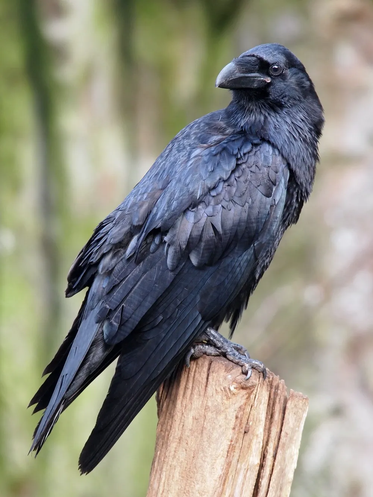
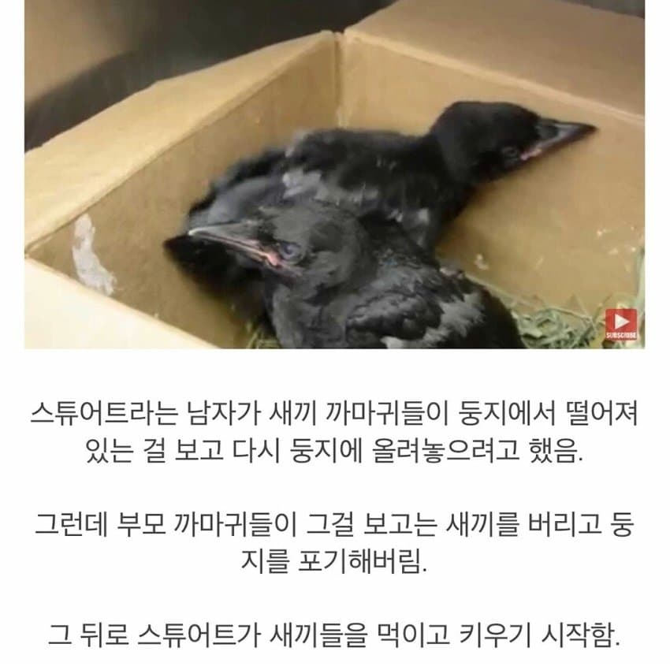
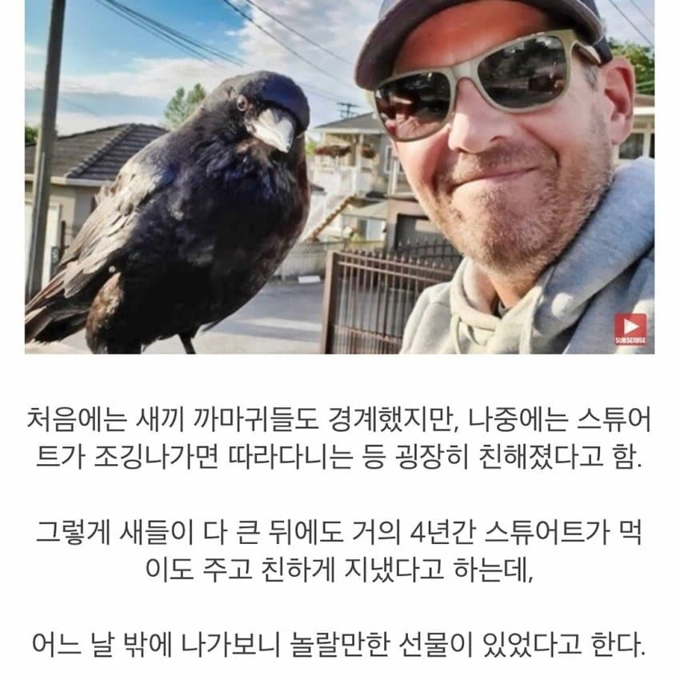
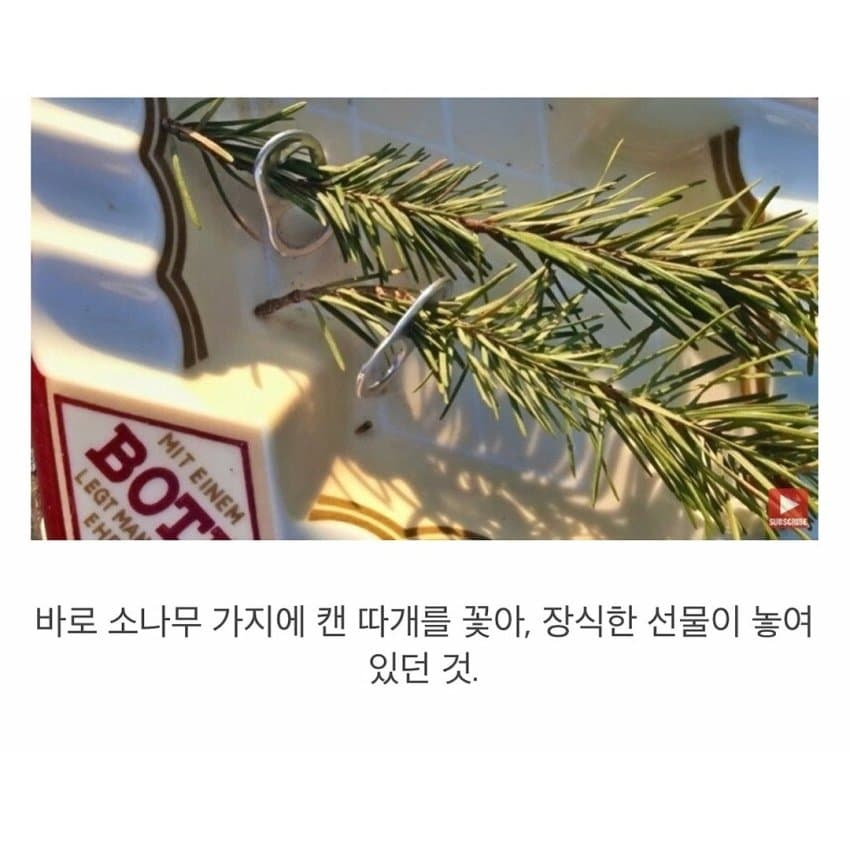
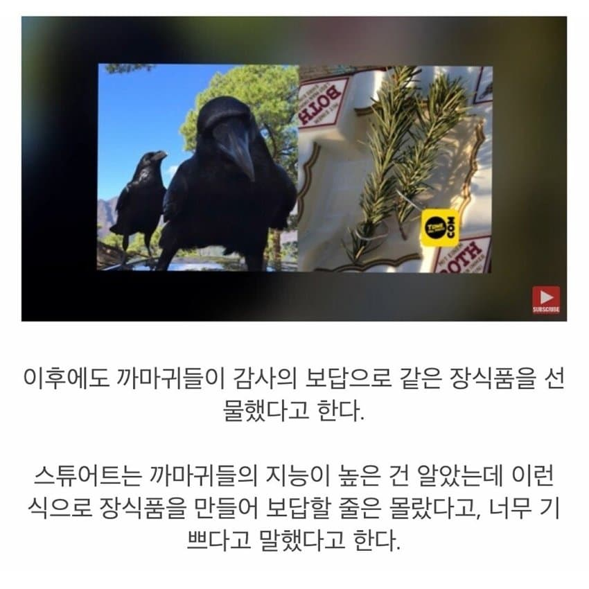
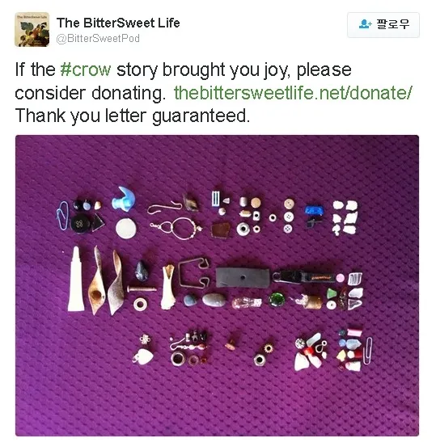
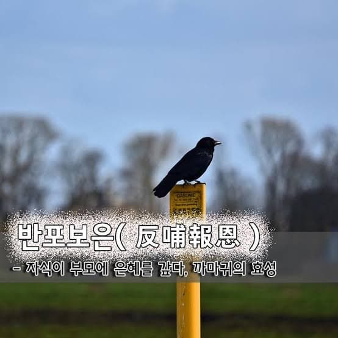
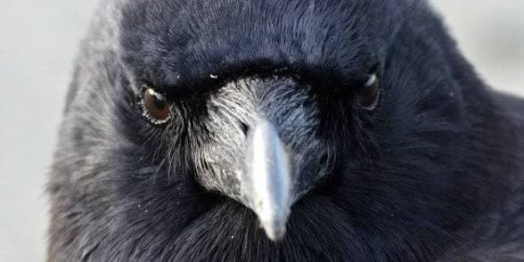
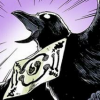

까마귀
잡식이라 아무거나 잘먹음
작아서 데리고 다니기 좋음
초등학생 저학년 보단 똑똑함
화장실 구분할줄암
훈련이 아니라 학습으로 기술을 익힐수있음
은혜갚기 존나 잘함

단점 : 한번 원한을 가지면 까마귀가 대대손손 얼굴 기억하고 복수함








댓글
수집 당시 댓글 244개
· ㅇㅇ · 11.13 08:29:00
· ㅇㅇ · 11.13 08:56:41
· ㅇㅇ · 11.13 10:22:42
· ㅇㅇ · 11.13 13:21:04
· ㅇㅇ · 11.13 13:30:05
· ㅇㅇ · 11.13 13:34:02
· 에이아이너무조아사랑해넌진짜최고야 · 11.13 14:40:48
ㅇㅇ · 11.13 05:39:00
ㅇㅇ · 11.13 05:50:07
ㅇㅇ · 11.13 05:52:48
· ㅇㅇ · 11.13 08:15:03
ㅇㅇ · 11.13 05:56:03
ㅇㅇ · 11.13 06:13:36
ㅇㅇ · 11.13 06:22:18
ㅇㅇ · 11.13 06:25:07
ㅇㅇ · 11.13 06:28:06
· ㅇㅇ · 11.13 07:10:43
· ㅇㅇ · 11.13 13:37:45
o.o · 11.13 06:33:30
ㅇㅇ · 11.13 06:36:34
ㅇㅇ · 11.13 06:37:58
ㅇㅇ · 11.13 06:41:17
모Y샀다가대가리깨진다 · 11.13 06:48:06
Hololive만본다 · 11.13 06:55:42
황족 · 11.13 06:56:22
ㅇㅇ · 11.13 06:56:30
ㅇㅇ · 11.13 06:57:29
ㅇㅇ · 11.13 06:59:40
· ㅇㅇ · 11.13 07:39:15
ㅇㅇ · 11.13 07:03:32
ㅇㅇ · 11.13 07:06:37
ㅇㅇ · 11.13 07:12:50
ㅇㅇ · 11.13 07:18:18
Nove123 · 11.13 07:19:55
ㅇㅇ · 11.13 07:20:10
ㅇㅇ · 11.13 07:20:24
ㅇㅇ · 11.13 07:24:02
사이버아다 · 11.13 07:33:23
· Lee.2 · 11.13 08:29:19
ㅇㅇ · 11.13 07:41:19
ㅇㅇ · 11.13 07:45:56
ㅇㅇ · 11.13 07:51:30
ㅇㅇ · 11.13 07:52:29
ㅇㅇ · 11.13 07:58:49
ㅇㅇ · 11.13 08:00:39
· ㅇㅇ · 11.13 12:43:32
· ㅇㅇ · 11.13 12:59:15
ㅇㅇ · 11.13 08:04:03
ㅁㅁ · 11.13 08:07:18
ㅇㅇ · 11.13 08:10:16
ㅇㅇ · 11.13 08:11:17
ㅇㅇ · 11.13 08:14:27
· ㅇㅇ · 11.13 08:16:46
ㅇㅇ · 11.13 08:16:16
니엔테 · 11.13 08:23:02
Lee.2 · 11.13 08:28:53
ㅇㅇ · 11.13 08:32:06
· ㅇㅇ · 11.13 09:48:37
ㅇㅇ · 11.13 08:32:26
원또 · 11.13 08:33:22
ㅇㅇ · 11.13 08:38:29
ㅇㅁㅇ)っ · 11.13 08:43:24
ㅇㅇ · 11.13 08:46:13
· ㅇㅇ · 11.13 09:47:54
ㅇㅇ · 11.13 09:33:28
· ㅇㅇ · 11.13 09:47:41
ㅇㅇ · 11.13 09:45:05
ㅇㅇ · 11.13 09:47:32
ㅇㅇ · 11.13 09:58:24
ㅇㅇ · 11.13 10:01:15
MC발년 · 11.13 10:04:15
ㅇㅇ · 11.13 10:13:14
ㅇㅇ · 11.13 10:22:04
ㅇㅇ · 11.13 10:36:45
ㅇㅇ · 11.13 11:20:51
ㅇㅇ · 11.13 11:23:43
ㅇㅇ · 11.13 11:30:43
ㅇㅇ · 11.13 12:04:33
ㅇㅇ · 11.13 12:13:39
ㅇㅇ · 11.13 12:40:38
ㅇㅇ · 11.13 13:57:02
펜도르 · 11.13 14:12:02
ㅇㅇ · 11.13 14:30:04
에이아이너무조아사랑해넌진짜최고야 · 11.13 14:39:55
에이아이너무조아사랑해넌진짜최고야 · 11.13 14:39:58
에이아이너무조아사랑해넌진짜최고야 · 11.13 14:40:02
알카 · 11.13 14:49:12
ㅇㅇ · 11.13 15:19:12
ㅇㅇ · 11.13 15:22:36
ㅇㅇ · 11.13 15:33:00
ㅇㅇ · 11.13 15:33:19
일일퀘스트노예 · 11.13 15:38:47
빙륜환 · 11.13 15:47:51

ㅇㅇ · 11.13 15:52:46
ㅇㅇ · 11.13 16:28:37
ㅇㅇ · 11.13 16:30:49
ㅇㅇ · 11.13 18:19:59
ㅇㅇ · 11.13 18:37:37
ㅇㅇ · 11.13 18:38:05
ㅇㅇ · 11.13 19:14:51
· ㅇㅇ · 11.13 05:24:40
· ㅇㅇ · 11.13 09:53:36
ㅇㅇ · 11.13 01:55:35
· ㅇㅇ · 11.13 01:56:00
ㅇㅇㅇ · 11.13 01:56:15
ㅇㅇ · 11.13 01:56:24
· ㅇㅇ · 11.13 02:00:50
· ㅇㅇ · 11.13 02:01:05
· ㅇㅇ · 11.13 03:02:56
· ㅇㅇ · 11.13 03:12:23
· 쌀이좋아 · 11.13 04:11:06
llllllIllllll · 11.13 02:00:55
· ㅇㅇ · 11.13 05:04:42
ㅇㅇ · 11.13 02:01:42
ㅇㅇ · 11.13 02:06:06
ㅇㅇ · 11.13 02:07:08
ㅇㅇ · 11.13 02:08:53
ㅇㅇ · 11.13 02:09:34
ㅇㅇ · 11.13 02:11:19
ㅇㅇ · 11.13 02:11:38
ㅇㅇ · 11.13 02:12:04
· 도떼녀 · 11.13 02:28:33
· ㅇㅇ · 11.13 05:24:22
ㅇㅇ · 11.13 02:13:19
ㅇㅇ · 11.13 02:14:15
ㅇㅇ · 11.13 02:17:01
· ㅇㅇ · 11.13 02:17:11
· ㅇㅇ · 11.13 06:47:00
· ㅇㅇ · 11.13 07:14:15
ㅇㅇ · 11.13 02:17:19
ㅇㅇ · 11.13 02:18:10
msnr · 11.13 02:21:04
· msnr · 11.13 02:21:15
· msnr · 11.13 02:21:45
· ㅇㅇ · 11.13 02:28:07
ㅇㅇ · 11.13 02:21:08
ㅇㅇ · 11.13 02:24:09
· ㅇㅇ · 11.13 02:55:06
· Hololive만본다 · 11.13 06:57:11
· ㅇㅇ · 11.13 07:52:16
· ㅇㅇ · 11.13 13:21:59
ㅇㅇ · 11.13 02:25:08
ㅇㅇ · 11.13 02:26:20
· ㅇㅇ · 11.13 07:43:18
도떼녀 · 11.13 02:28:59
· ㅇㅇ · 11.13 08:26:35
ㅇㅇ · 11.13 02:29:29
디디 · 11.13 02:29:56
ㅇㅇ · 11.13 02:33:48
ㅇㅇ · 11.13 02:34:29
ㅇㅇ · 11.13 02:35:51
· ㅇㅇ · 11.13 02:58:33
ㅇㅇ · 11.13 02:39:42
· Mernerner · 11.13 06:09:07
ㅇㅇ · 11.13 02:41:33
ㅇㅇ · 11.13 02:44:55
ㅇㅇ · 11.13 02:50:07
ㅇㅇ · 11.13 02:53:35
· 기븐 · 11.13 02:55:41
· ㅇㅇ · 11.13 04:19:22
기븐 · 11.13 02:56:21
ㅇㅇ · 11.13 02:58:36
ㅇㅇ · 11.13 03:08:17
· ㅇㅇ · 11.13 03:20:36
ㅇㅇ · 11.13 03:08:29
Cast_Away · 11.13 03:21:12
ㅇㅇ · 11.13 03:27:00
· ㅇㅇ · 11.13 03:49:16
· ㅇㅇ · 11.13 05:02:13
· ㅇㅇ · 11.13 09:52:57
ㅇㅇ · 11.13 03:31:57
· ㅇㅇ · 11.13 11:47:09
ㅇㅇ · 11.13 03:55:54
하나데라노도카 · 11.13 03:57:17
ㅇㅇ · 11.13 04:00:00
키나루디안마기 · 11.13 04:02:42
함예진 · 11.13 04:17:00
ㅇㅇ · 11.13 04:18:54
· ㅇㅇ · 11.13 04:49:39
· ㅇㅇ · 11.13 12:48:31
ㄴmooㅎ · 11.13 04:19:53
ㅇㅇ · 11.13 04:25:01
ㅇㅇ · 11.13 04:26:29
ㅇㅇ · 11.13 04:28:32
ㅇㅇ · 11.13 04:54:47
ㅇㅇ · 11.13 05:00:01
ㅇㅇ · 11.13 05:02:36
ㅇㅇ · 11.13 05:03:47
· ㅁㄴㅇ · 11.13 05:30:09
ㅇㅇ · 11.13 05:12:23
· ㅇㅇ · 11.13 07:43:42
· ㅇㅇ · 11.13 08:57:02
· ㅇㅇ · 11.13 13:48:25
ㅇㅇ · 11.13 05:21:35
ㅇㅇ · 11.13 05:29:32
ㅇㅇ · 11.13 05:34:40
ㅇㅇ · 11.13 05:38:48
· ㅇㅇ · 11.13 05:49:34
· ㅇㅇㄴㄴ · 11.13 05:54:50
· ㅇㅇ · 11.13 06:44:29
유동코드씨발완장개새끼야팔다리뽑아 · 11.10 22:09:41
· ㅇㅇ · 11.13 01:50:49
· ㅇㅇ · 11.13 02:36:48
ㅇㅇ · 11.10 22:10:40
ㅇㅇ · 11.10 22:10:46
· ㅇㅇ · 11.13 02:09:02
· ㅇㅇ · 11.13 02:57:03
ㅇㅇ · 11.10 22:12:39
말랑보추 · 11.13 01:50:09
· 암타황제강시현 · 11.13 01:51:06
· ㅇㅇ · 11.13 01:52:33
· かなたん · 11.13 01:52:56
악의꽃 · 11.13 01:50:29
나안 · 11.13 01:50:51
ㅇㅇ · 11.13 01:50:55
암타황제강시현 · 11.13 01:51:00
· ㅇㅇ · 11.13 01:52:27
· かなたん · 11.13 01:53:11
ㅇㅇ · 11.13 01:51:29
· ㅇㅇ · 11.13 04:04:49
woze · 11.13 01:52:17
ㅇㅇ · 11.13 01:52:19
· かなたん · 11.13 01:53:30
· 암타황제강시현 · 11.13 01:54:27
ㅇ · 11.13 01:52:22
· ㅇㅇ · 11.13 02:01:04
· msnr · 11.13 02:22:30
· ㅁㄴㅇ · 11.13 05:27:42
· ㅇ어 · 11.13 05:46:45
· ㅁㄴㅇ · 11.13 05:49:08
· ㅇ어 · 11.13 05:53:10
· ㅇㅇ · 11.13 08:35:11
· 피리장재미슴 · 11.13 09:10:21
· ㅇㅇ · 11.13 09:31:39
· ㅇㅇ · 11.13 18:29:33
かなたん · 11.13 01:52:26
· ㅇㅇ · 11.13 01:52:40
· 암타황제강시현 · 11.13 01:54:30
ㅇㅇ · 11.13 01:53:45
· ㅇㅇ · 11.13 02:00:42
· 기븐 · 11.13 02:54:24
· ㅇㅇ · 11.13 03:27:07
· ㅇㅇ · 11.13 03:31:27
· ㅇㅇ · 11.13 03:58:58